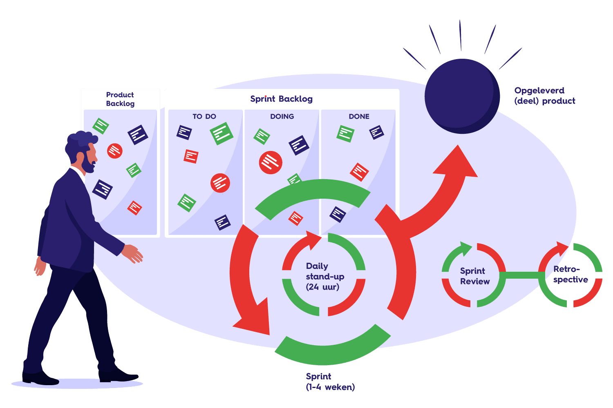

Waardepropositie (vervolg)
In de tweede workshop van "Smart Business" kwam er een gastspreker die werkt voor verzekeraar "AXA". De
gastspreker lichtte een case toe die uit de praktijk kwam waarvoor een oplossing bedacht moest worden. Het
ging erom dat AXA verlies draaide op de WA-verzekeringen voor auto's. Samen met Timo, Robbert en Koen heb ik
een oplossing bedacht en gepresenteerd.
Business Model Canvas
Allereerst hebben we het bedrijf in kaart gebracht middels het Business Model Canvas. Voor mij was deze
methode onbekend. Ik vond het eerst wat lastig om te starten, maar toen ik eenmaal door had hoe het werkte
ontdekte ik hoe handig de tool is om eenvoudig inzicht te krijgen in de opbouw van een bedrijf.

Mindmap
Vervolgens hebben we samen gebrainstormed om te zoeken naar oplossingen voor de case. In een
mindmap hebben we verschillende ideeën samengebracht. Uiteindelijk hebben we ervoor gekozen om onze oplossing
verder uit te werken met de volgende ideeën: "Data bijhouden" en "Alleen in natura uitbetalen".
Veranderplan
Met de twee ideeën: "Data bijhouden" en "Alleen in natura uitbetalen", hebben we een veranderplan
gemaakt. In dit plan wordt slimme technologie toegepast om het rijgedrag van de bestuurder te registeren.
Met een dashcam die beschikt over 360° zicht, een acceleratie- en snelheidsmeter, wordt data verzameld.
Deze data kan gebruikt worden bij het beoordelen van schadeclaims van de desbetreffende klant. De
camerabeelden en de data van de sensoren kunnen gebruikt worden om te achterhalen of de gereden schade
te wijten is aan de klant zelf of niet. Hiermee wordt voorkomen dat de verzekeraar claims uitkeert
terwijl dit niet terecht is.
In het plan stellen wij ook voor om alleen nog maar in natura uit te betalen. Zo wordt voorkomen
dat het geld van een uitgekeerde claim gebruikt wordt voor andere doeleinden dan het herstellen van
de schade. Ook kan de verzekeringsmaatschappij afspraken maken met schadeherstelbedrijven, waardoor
schade eventueel goedkoper hersteld kan worden. Dit bespaard de verzekeraar geld, en uiteindelijk ook
de klant omdat de premie verlaagd kan worden.

Vernieuwd Business Model Canvas
Op basis van het veranderplan is het Business Model Canvas aangepast zodat deze weer up-to-date is met
de nieuwe opbouw van het bedrijf. Hierbij zijn de volgende veranderingen zichtbaar:
- Er wordt een product geïntroduceerd, de dashcam (meetkastje)
- De data die het kastje genereerd moet geregistreerd en opgeslagen worden
- Er is een leverancier nodig die de kastjes gaat produceren
- De relatie met de klant veranderd naar een 1 op 1 relatie

Bezoek aan vastgoed onderhoudsbedrijf ELK®
Op woensdag 28 september heb ik samen met de andere studenten van de minor een bezoek gebracht aan vastgoed onderhoudsbedrijf
ELK®. Hier werden wij ontvangen door Rosemarie Pyrek en Betty Leenders. Zij presenteerden het bedrijf en leidde
ons rond door het pand. Tijdens hun presentatie leerde ik meer over de LEAN business strategie. Ik had vooraf
geen idee wat deze strategie inhieldt, tijdens de rondleiding werd mij dit duidelijker. Ik merkte op dat er op kantoor
veel gewerkt werd met post-its en strakke vaste methodieken. Voor vrijwel alles was wel een bepaalde procedure, zo
moest het gereeedschap, zoals boormachines en ander materieel, door de vaklui gereserveerd worden. In het magazijn
viel mij op dat er weinig voorraad was, dit past in het plaatje van LEAN. Daarbij lag alles in het magazijn op een
vaste plek, aangegeven met foto's. Ik zie mijzelf niet werken bij ELK® op kantoor. Ik werd tijdens de rondleiding
al een beetje vervelend van alle post-its die aan de muur hingen. Ik kreeg de indruk dat het werk er strak
gereguleerd en gepland wordt, daar vind ik mijzelf niet zo goed bij passen. Ik zou zelf liever op een kantoor werken
waar alles wel goed geregeld/gepland is, maar waar de medewerkers zelf ook nog een mogelijkheid krijgen om een
eigen invulling te geven aan de uitvoering. Ik vond het erg leuk en leerzaam om een kijkje te nemen binnen dit
bedrijf en in werkelijkheid te zien hoe de LEAN-methodiek toegepast wordt.

Blinklane training over Agile & Scrum
Na de rondleiding door het bedrijf volgde een workshop over Agile & Scrum. Presentatoren David Verkerk en
Romée Kuijpers van
"Blinklane Consulting" vertelden in een workshop
wat agile werken en scrum inhoudt. Het is een werkwijze waarop men door middel van korte sprints tot een resultaat
komt. Een groot voordeel hiervan: door de korte sprints is het eenvoudig om wijzigingen onderweg mee te nemen.
Hierdoor ben je dus erg flexibel! Ik wist niet wat agile en scrum inhieldt, ik wist slechts dat het bestond. Ik
heb er ook nog niet eerder mee gewerkt, daarom was deze workshop voor mij ook zeer zinvol.
Na de presentatie over agile en scrum volgde een oefening. In teams van vier personen moesten we binnen een
bepaalde tijd een product opleveren. Dit ging volgens een aantal stappen:
- Stap 1. Planning, aan welke opdracht uit de backlog gaan we werken?
- Stap 2. Uitvoering, hierin kregen we 2 minuten de tijd om de gekozen opdrachten uit te voeren.
- Stap 3. Reflectie op het werk, wat ging goed en wat kon beter.
Aan de verschillende verschillende opdrachten waren punten gekoppeld. Van tevoren werd opgeschreven hoeveel punten
de groep dacht te behalen. Na de oefening werd gekeken hoeveel punten daadwerkelijk behaald werden. De oefening
werd drie keer uitgevoerd. Uiteindelijk zou er in de puntentelling een verschil zichtbaar moeten zijn,
waarbij er steeds meer punten verdiend worden. Echter liep dit niet helemaal zoals verwacht, dit verschil werdt
namelijk niet bij alle groepen zichtbaar. Ik vond het een erg leuke en leerzame oefening. Ik heb tijdens deze workshop
op een leuke manier kennis gemaakt met agile en scrum.

Advies aan ELK®
Tijdens de presentatie van Rosemarie Pyrek en Betty Leenders kregen we een opdracht mee. In groepen van drie
personen moesten we een advies formuleren en presenteren aan de Regiomanager van ELK®. De exacte opdracht luidde
als volgt:
"Formuleer een advies aan ELK® over hoe wij Smart Industry beter kunnen integreren in onze
bedrijfsvoering en in ons werk buiten en presenteer deze aan het einde van de dag."
Na de workshop over agile en scrum kregen we één uur de tijd om te werken aan het advies.
Samen met Mathijs en Niels vormde ik een groep en gingen we aan de slag. We kwamen op het idee om de klant op een
nieuwe manier kennis te laten maken met de zogeheten "Kubus" van ELK®. Deze kubusvormige unit kan in een woning
geplaatst worden en beschikt over een keuken, badkamer, apart toilet en twee technische ruimtes. Met deze units
is ELK® in staat om snel woningen te renoveren.
Om de huishoudens te overtuigen van deze oplossing heeft ELK® ervoor gekozen om de consument middels een
brochure te informeren. In dit boekwerk, met het formaat van een krant, wordt uitgelegd wat de Kubus is en worden
plaatjes getoond zodat mensen het kunnen visualiseren.
Samen met Mathijs en Niels heb ik bedacht om mensen te overtuigen van de Kubus door gebruik te maken van de
derde dimensie. Wij hebben ELK® geadviseerd om een 3D-model te maken van de unit en deze op de website te plaatsen.
De consument kan dan op de website in een soortgelijke Google StreetView omgeving rond en door de Kubus lopen.
Eventueel zou dit nog uit te breiden zijn door gebruik te maken van een Virtual Reality bril, welke de adviseur
dan meeneemt tijdens zijn bezoek aan huis, zodat mensen echt IN de Kubus kunnen kruipen. Als toevoeging op deze functionaliteit
op de website adviseerden wij ook om een Augmented Reality optie toe te voegen. Hiermee kan de consument vanaf de
bank de kubus op werkelijk formaat virtueel in zijn woning plaatsen. Hierdoor krijgt de klant een beter idee wat
het resultaat zou zijn. Het is de bedoeling dat het ook mogelijk is dat de klanten de kubus in de online omgeving
kunnen personaliseren. Hierbij kan gedacht worden aan kleur- en materiaalkeuze. Deze wijzigingen zijn dan ook
zichtbaar in zowel de "StreetView-omgeving" als in VR en AR.
Ik vond het erg leuk om dit advies te bedenken en gelijk te presenteren aan de Regiomanager. Hij was erg
enthousiast over het idee en vond dit zeker een leuke toevoeging voor de klanten. Hij zij ook dat dit hun adviseurs
zou helpen om mensen sneller duidelijk te maken wat de Kubus inhoudt.
Tijdens een business-workshop heb ik deelgenomen aan een game, de zogeheten "Businessgame".
Hierin gingen we verder op de casus van AXA, maar nu gingen we het echt beleven. Tijdens
de game nam iedereen een rol in binnen de organisatie van AXA. Ik moest acteren alsof ik
van de afdeling ICT was. Op mijn afdeling speelden meerdere problemen. Samen met Robert, die
ook van de ICT-afdeling was, had ik de taak om in gesprek te gaan met personen (klasgenoten)
van de andere afdelingen om een oplossing te vinden voor de problemen van onze afdeling.
Echter, net zoals in een echt bedrijf, waren er verschillende belangen. Iedere afdeling kreeg
een aparte situatiebeschrijving waarin stond wat hun problemen en belangen waren.
Tijdens de game ging ik in gesprek met de afdeling HR. Op de ICT-afdeling was de
werkdruk te hoog, een kwestie van personeelstekort. Ik ging met HR in gesprek om dit probleem
op te lossen, echter ging dit niet zo goed als gehoopt. Ondanks dat er een oplossing kwam waar
beide partijen tevreden mee waren, kwam ik terug op de afdeling met nog meer werk. Ik had het
probleem nog groter gemaakt.
In de nabespreking kwam ik erachter waarom ik het probleem nog groter had gemaakt. Ik geef
te snel toe. Ik heb tijdens het gesprek met HR niet goed nagedacht over de impact van de oplossing.
Ik ging simpelweg te snel akkoord met een voorstel omdat het mij de juiste oplossing leek, hierover
had ik echter wat langer na moeten denken.
Ik vond het in het begin erg lastig om in de game te komen. Ik wist niet zo goed wat er van
mij verwacht werd. Na de game kreeg ik als feedback dat ik erg goed acteerde als ICT'er, dus
blijkbaar ging het wel goed. Ik vond het leuk en leerzaam om deel te nemen aan de businessgame.
Ik heb ervaren hoe ik het niet moet doen en neem dit mee zodat ik niet nogeens deze zelfde fout
maak.